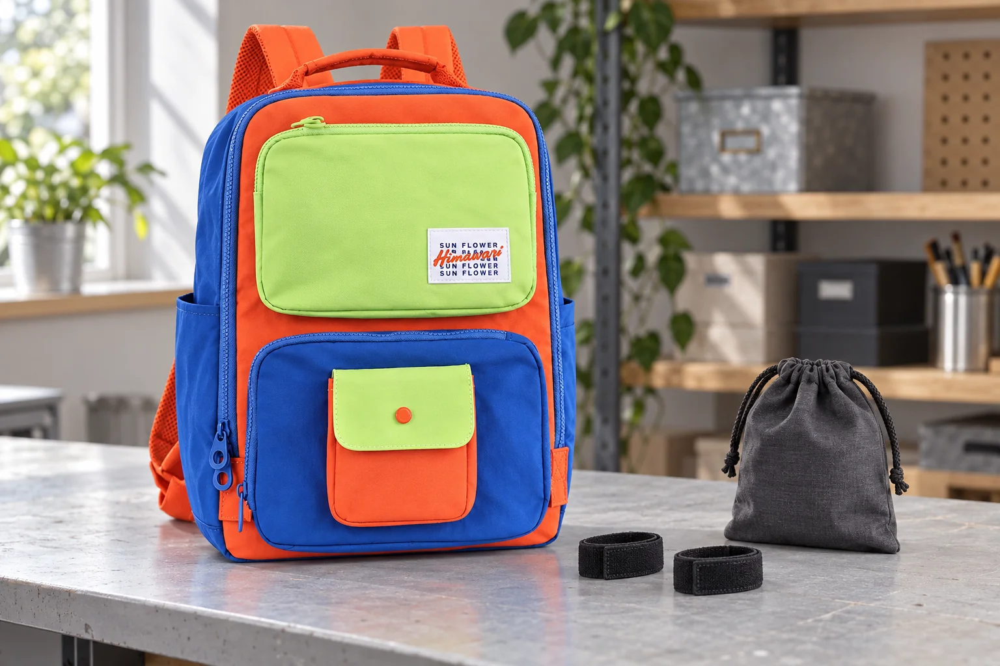

찍찍이 밴드를 풀었다면, 닫아 둘 면부터

케이블을 묶었던 찍찍이 밴드를 풀고 다른 소품과 한데 넣으면 거친 면이 천에 닿을 수 있습니다. 꺼낼 때 한곳이 붙잡히는 느낌이 들고, 당기면 가방 안감이나 천주머니가 함께 따라옵니다. 작은 밴드의 보관은 어디에 넣느냐에 더해 어떤 면을 노출한 채 두었느냐를 살피는 일이기도 합니다. 밴드가 원래 붙는 짝을 찾아 닫아 두는 순서부터 생각해 봅니다.
가방 안감 대신 밴드의 짝에 붙인다
일반적인 찍찍이에는 갈고리가 있는 면과 고리 형태의 면이 있습니다. VELCRO의 갈고리와 고리 구조 설명처럼 두 면이 맞물리는 방식을 먼저 떠올릴 수 있습니다. 사용하는 소품에서는 어느 면이 바깥으로 나오고 어느 면과 붙도록 되어 있는지 직접 살펴봅니다. 길쭉한 밴드와 두 조각으로 나뉜 부품은 닫힌 모습이 다를 수 있습니다.
사용을 마친 밴드는 원래 짝이 되는 면끼리 붙입니다. 감는 구조라면 자기 밴드의 안내에 맞춰 정리하고 거친 끝이 밖으로 남아 있는지 봅니다. 같은 밴드를 여러 개 쓴다면 각 밴드의 짝을 구별해 두면 다음에 풀어 쓰기 쉽습니다. 붙일 면이 모자란 상태로 끝을 가방 안감에 붙여 놓으면 안감이 임시 고정 자리로 쓰이게 됩니다. 원래 그런 용도로 만들어졌는지 알 수 없는 곳에 부착을 추가하지 않습니다.
케이블에서 완전히 빼지 않아도 되는 밴드라면 이동할 때 그 상태를 유지할 수 있는지 제조사 안내를 봅니다. 따로 떼어두는 제품은 케이블 파우치 안에 정한 자리를 마련합니다. 작은 밴드를 열쇠나 펜과 한꺼번에 흩어 넣으면 다음 사용 때 어느 소품에 붙었는지부터 찾아야 할 수 있습니다. 케이블을 정리할 때 밴드도 같은 묶음 안에서 닫으면 분리된 소품이 늘어나는 부담을 줄일 수 있습니다.
밴드를 닫았는데도 갈고리 면의 일부가 남는다면 사용하는 물건과 밴드 길이가 맞는지 살펴봅니다. 남은 부분을 억지로 접착제나 테이프로 고정하기보다 해당 소품의 사용 방법을 확인합니다. 잘 닫히지 않는 상태를 더 큰 힘으로 문질러 해결하지 않습니다. 무엇을 묶을 때 필요한 길이인지, 이동을 위해 어떤 모습으로 둬야 하는지 따로 생각하면 정리 방식도 구체적으로 정할 수 있습니다.
Himawari No.8029과 케이블 소품을 함께 챙길 때에는 사용한 밴드가 닫힌 상태로 돌아갈 위치를 정합니다. 케이블을 풀어 쓴 뒤 밴드를 같은 파우치에서 다시 찾을 수 있도록 두면 됩니다. 밴드의 짝은 밴드 안에서 맞추고 가방 안감을 부착 면으로 쓰지 않습니다. 파우치를 하나 더 마련하기 전에 현재 소품의 열린 면이 어디를 향하는지 보면, 사용 뒤 무엇을 먼저 닫아야 할지 정리할 수 있습니다.

걸린 느낌이 있다면 닿은 곳을 보인다
소품을 꺼낼 때 안감이 따라오면 계속 당기는 동작을 멈추고 무엇이 붙었는지 봅니다. 가방 입구에서 무게를 받쳐주고 맞닿은 부분을 볼 수 있게 정리합니다. 무거운 물건이 밴드에 연결되어 있다면 그 물건의 무게도 받칩니다. 가방 안쪽이 보이지 않는 상태에서 힘으로 끌어내면 실제로 걸린 면을 확인할 수 없습니다. 손이 닿는 공간을 확보한 뒤 천과 소품이 만난 위치부터 살펴봅니다.
밴드의 갈고리가 섬유에 걸린 것인지, 지퍼나 다른 부품에 끼인 것인지 구별합니다. 상황이 다르면 필요한 조치도 달라질 수 있습니다. 실이 늘어나거나 풀린 곳을 발견했다면 바로 가위로 잘라 보기 좋게 만들기보다 상태를 남겨 제품 관리 안내나 수선 문의에 사용할 수 있습니다. 떨어진 작은 실이 어디에서 나온 것인지 모르면 임의로 결론을 내리지 않습니다. 소품을 분리한 뒤 안쪽 상태를 다시 봅니다.
갈고리 면에 먼지나 실이 붙어 있다면 밴드 제조사의 관리 방법을 확인합니다. 가방의 안감을 강하게 문질러 밴드를 닦는 방식은 관리 범위를 벗어날 수 있습니다. 밴드와 가방을 각각 다루고, 해당 소품을 계속 사용할 상태인지도 살펴봅니다. 스스로 확인하기 어려운 걸림이나 변형이 반복된다면 닫는 방법과 보관 위치를 바꾸기 전에 제품 안내를 참고하는 편이 좋습니다.
다음 사용에서 풀기 쉬운 보관
닫힌 밴드가 작은 파우치 안에서 다시 열리는 경우에는 어느 끝이 움직이는지 봅니다. 다른 물건에 눌려 열린 것인지, 원래 여밈이 맞지 않았는지 확인합니다. 파우치를 더 꽉 채우는 일로 해결하기보다 밴드가 붙는 상태를 먼저 정합니다. 각각의 짝을 함께 둔 다음 필요한 개수만 가져가면 현장에서 찾을 소품도 줄어듭니다. 쓰지 않은 밴드는 미사용 묶음에, 사용한 것은 정리를 마친 뒤 제자리로 둘 수 있습니다.
별도 천주머니를 사용한다면 닫힌 밴드를 넣고 자연스럽게 꺼낼 수 있는지 살펴봅니다. 주머니를 하나 더 썼다는 사실만으로 걸림이 사라지는 것은 아니므로 어느 면이 안쪽을 향하는지도 함께 봅니다. 다음에 풀어 쓸 밴드 끝이 어디인지 알아볼 수 있으면 급히 케이블을 꺼내도 파우치 전체를 뒤집을 필요가 줄어듭니다. 소품을 넣는 위치는 자기 사용 순서에 맞춰 정하면 됩니다.
가방을 비우는 날에는 열린 밴드가 소지품 사이에 남았는지 확인합니다. 작은 부품을 찾아내 닫아 두고, 안쪽 천에 걸린 흔적이 있으면 상태를 살펴봅니다. 다음 외출에서는 케이블을 풀어 쓰고 다시 담는 순간에 밴드의 짝부터 맞춥니다. 한 번의 사용이 끝나는 자리에서 열린 면을 정리해두면 귀가 후에는 밴드와 천이 엉킨 상태를 다시 풀어야 할 일이 줄어듭니다.